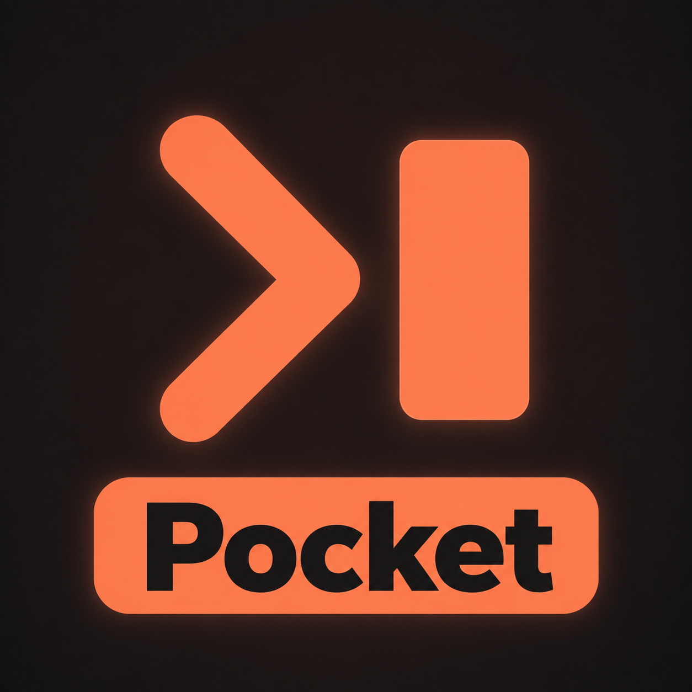

Pairlet · 过渡图标尺寸候选
产品名 Pairlet；设备名 CC Pairlet。主图标保留 Pocket 标签，微型图标使用原无字主体。以下是浏览器 CSS 尺寸检查，不能替代设备桌面、系统遮罩或真实升级验收。
标签可读性对照
原始预览与放大标签候选；两者都尚未完成设备验收。

放大标签48 CSS px原预览60 CSS px
放大标签60 CSS px
原预览76 CSS px
放大标签76 CSS px
Pairlet
CC Pairlet40 CSS px
CC Pairlet48 CSS px
CC Pairlet60 CSS px
CC Pairlet76 CSS px
CC Pairlet96 CSS px
CC Pairlet128 CSS px
Pairlet
CC Pairlet40 CSS px
CC Pairlet48 CSS px
CC Pairlet60 CSS px
CC Pairlet76 CSS px
CC Pairlet96 CSS px
CC Pairlet128 CSS px
微型无字版本
16 CSS px
20 CSS px
24 CSS px
32 CSS px